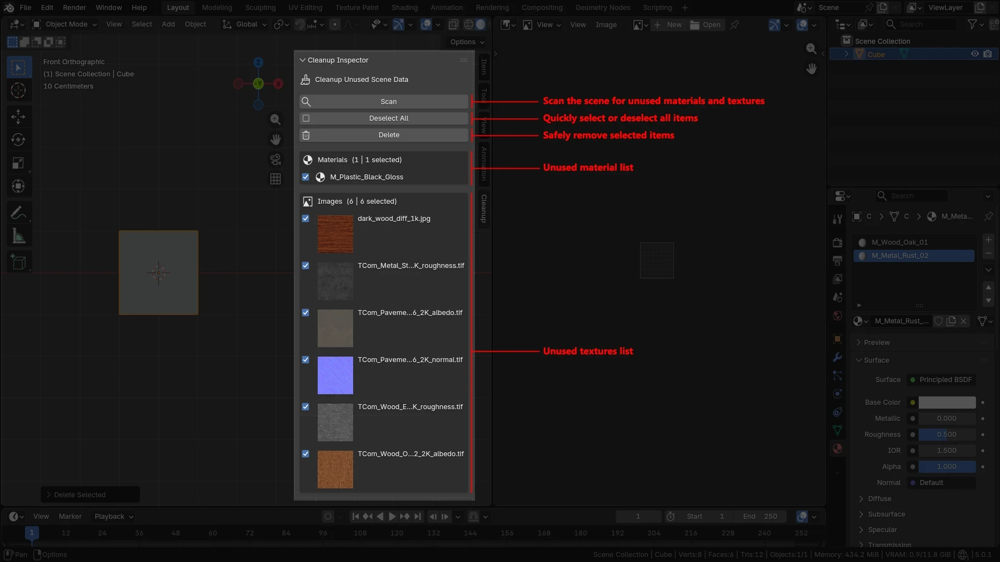

Scene scan
Escanea la escena y detecta materiales y texturas que ya no tienen uso.

Explorar breakdown ↓01 / Overview
Un add-on ligero para revisar y eliminar datos sin uso durante la iteración de assets en Blender.
Los materiales y texturas obsoletos se acumulan fácilmente a medida que una escena evoluciona. Cleanup Inspector los reúne en un panel compacto dentro del viewport para que el artista pueda identificarlos, revisarlos y eliminarlos sin interrumpir su flujo.
Escanea la escena y detecta materiales y texturas que ya no tienen uso.
Organiza los resultados para seleccionar cada elemento o gestionar la lista completa.
Elimina únicamente los elementos seleccionados, con confirmación y soporte para deshacer.
02 / Workflow
La herramienta concentra una tarea dispersa en una interacción breve y predecible, accesible directamente desde el panel lateral del viewport.
Analiza las relaciones de uso en la escena mediante la Blender Python API.
Separa materiales e imágenes y ofrece selección individual o global.
Confirma la operación y elimina de forma segura los datos seleccionados.
Una mejora pequeña.
Un flujo más directo.
Cleanup Inspector no busca sustituir las funciones internas de Blender, sino hacer más accesible una tarea cotidiana de producción: revisar datos obsoletos antes de entregar o continuar un asset.
El proyecto explora cómo herramientas específicas y bien enfocadas pueden reducir fricción dentro de un pipeline 3D.
03 / Fin del proyecto